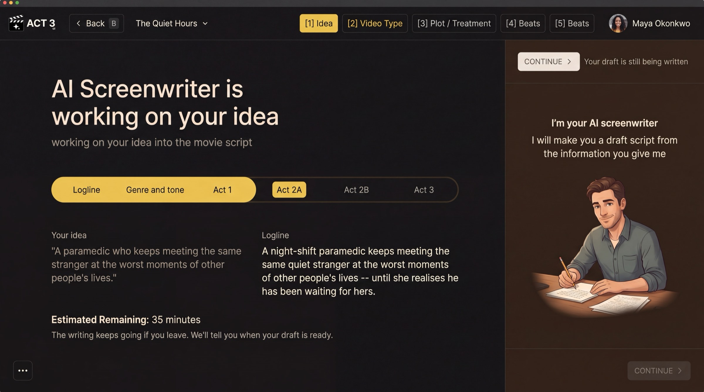

Step 7 of 8
Approve and let it write
Writing the full script costs credits, so ACT 3 AI asks before it starts. Read the price and press Write script. Wait while the scenes, script and shot ideas are written, then click CONTINUE ›.

Turns on when the writing is doneThe AI Screenwriter's progress page. The script-writing wait uses this same layout, with the stages Scenes · Script · Shot ideas.
The credit approval
After Beats, ACT 3 AI shows what writing the script will cost. If your balance covers it, you see one yellow button, Write script (by AI screenwriter), with its price. Press it to start. ‹ Back returns you to Beats with nothing spent.
If you do not have enough credits
The same page opens with a way to add credits under it: upgrade your plan or see all plans. After paying you come back to this page and press Write script. Your plot, acts and beats are kept either way.
While it writes
The page AI Screenwriter is writing your script shows three stages: Scenes, Script and Shot ideas. The writing keeps going if you leave. When it reads Your script is written, CONTINUE › turns on.
Why you go next to Visual Options
The script is done, but the project is not. You return to the New Project wizard to choose the look, the cast and the storyboards, the same steps an imported script goes through.